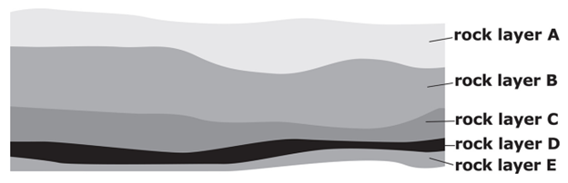
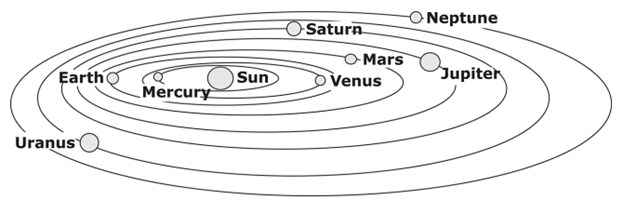
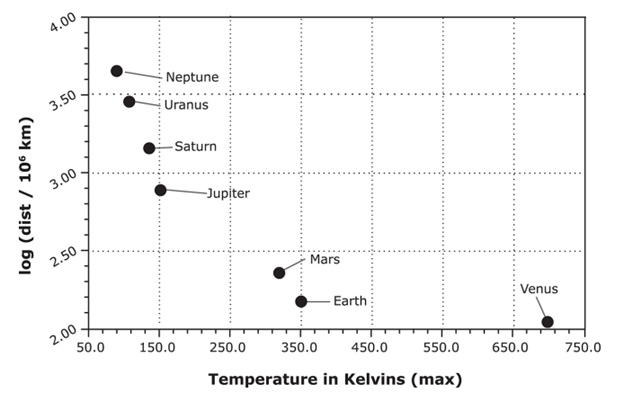
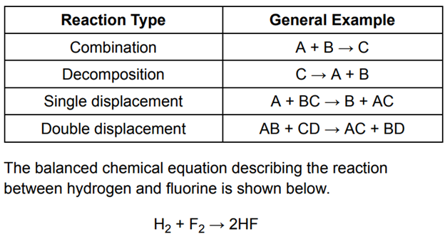
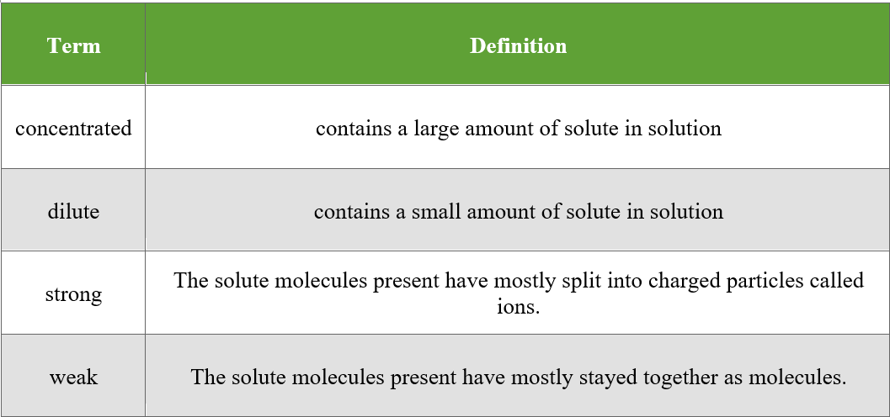

When an organism is buried shortly after its death, it fills with groundwater that contains many minerals. Over time, these minerals precipitate, forming detailed fossils that can reveal fascinating structural information about the organism. Oftentimes, the original remains of the organism dissolve over time so all that remains is the fossil. Over many years, several layers of material can form sediment over the fossilized organism, burying it even further. Each of these layers is representative of a particular time period. Through carbon dating, scientists can determine when a particular layer of sedimentary rock was formed. If a particular organism was fossilized in that layer, the scientists can deduce that that organism most likely lived during that time period. The half-life of carbon-14 (the radioactive isotope of carbon) is approximately 5,000 years. The following diagram depicts several rock layers.
A year is the length of time it takes for a planet to complete one entire orbit around the Sun.
Our solar system includes our Sun, as well as the planets and other objects that orbit it. It was formed approximately 4.5 billion years ago and contains eight planets: Mercury, Venus, Earth, Mars, Jupiter, Saturn, Uranus, and Neptune. Originally, Pluto was classified as the ninth planet and farthest from the Sun; however, in 2006, the International Astronomical Union redefined the necessary characteristics of a planet and in doing so excluded Pluto. The Sun contains 99.9% of the mass of the solar system and thus induces the other planets to orbit around it. The four innermost planets encircling the Sun are relatively small. Immediately beyond them in the solar system is a rocky asteroid belt. Looking farther out in the solar system one can find the largest planets, known as the gas giants. Many of the planets have secondary systems that include moons or planetary ring systems. The following graph indicates the temperatures found on each planet based on its location relative to the Sun. The maximum temperature in Kelvin is reported.
During periods of intense activity, the cells of the body need more oxygen than the body is supplying, a situation known as oxygen debt. During these periods, the body’s cells briefly switch to “anaerobic respiration,” which produces lactic acid. The buildup of lactic acid in the tissues signals the brain to increase breathing and heart rates, thus supplying the body with more oxygen.
The density of seawater is 1,029 kilograms/meter3 . 1 kilogram/liter = 1,000 kilograms/meter3.
There are four basic types of chemical reactions, as shown in the table below.
In a certain forest, foxes prey on rabbits. A virus that infects only rabbits spreads through the forest, killing many rabbits.
There are several terms used to describe solutions based on the amount and behavior of the solute that has been dissolved in the solution.
To test a new voice feature in a cockpit design a flight simulator was used. The simulator was programmed to give visual readings of flight information, or to give visual and auditory (voice) readings of flight information. A hundred test pilots were put through a simulated emergency landing procedure, but were randomly assigned to the visual, or visual and auditory conditions. Ten flight experts rated each pilot’s performance in the simulator on a scale of 1 (very poor) to 10 (excellent).
1. The passage states that the half-life of carbon-14 is about 5,000 years. This means that if you start with a sample of carbon-14 and wait for 5,000 years,
2. If each of the planets revolved around the Sun at exactly the same speed, which of these planets would have the shortest year?
3. Based on the information in the passage, which of the following statements is FALSE?
4. After which of the following activities would lactic acid most likely be found in the body?
5. What is the density of seawater in kilograms/liter? You may use a calculator.
6. Which of the four basic types of chemical reactions is this?
7. Choose the most appropriate %EG to be included in the solution.
8. Which of the following is most likely to occur to the fox population?
9. Vinae has a solution of salt water. If she combines 50 mL of her solution with 50 mL of water, what will happen?
10. How this test could be improved to become more reliable? Choose the best answers.